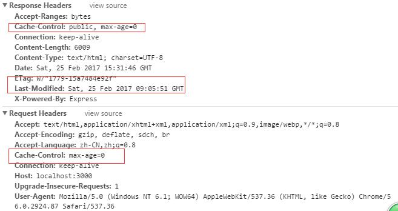
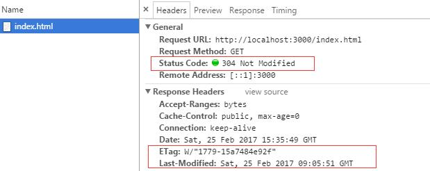
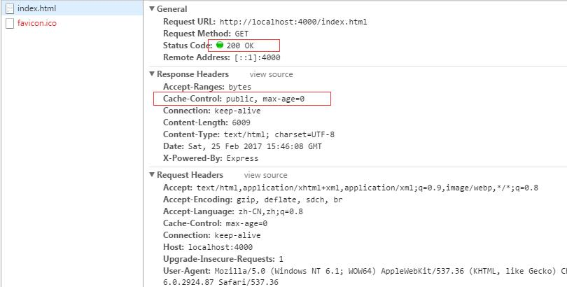
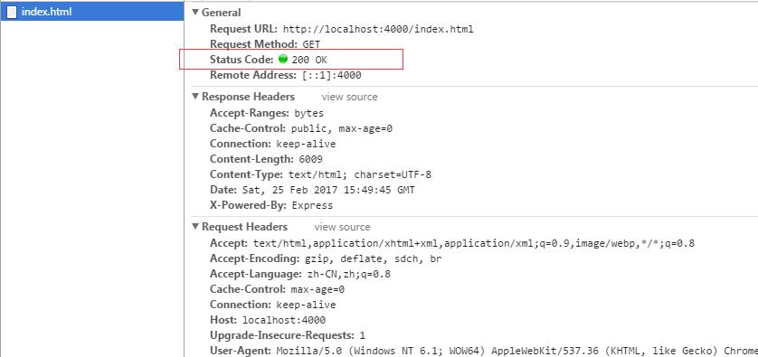

浏览器缓存与Express简单实现
浏览器缓存这个问题也是我心心念念了很久的一个问题，这个问题和Cookie、Session一样是涉及到后端的一个问题，所以颤颤巍巍的祭出我刚学不久的Node和Express，来个实践终归记忆更深刻。若是发现我有错误出现，多谢留言指正哈 ^^
什么是浏览器缓存
浏览器缓存我理解的就是浏览器中的网站发出请求，浏览器根据后端的响应或者html页面规定进行web资源（如html页面，图片，js,数据等）的存储。当下次浏览器再发出请求时依据缓存规则或者是从浏览器直接返回副本，或者是向后端确认此副本是否可用，若可用则返回此副本，若不可用，则从后端返回数据。
所以我们就可以看出浏览器缓存确实有很多好处，如加快了页面的反应速度，增加了用户体验，节省了带宽等等。那浏览器缓存究竟是怎么实现？接着看。。。。
浏览器缓存分类
浏览器缓存实际上也就可以分成两类，即非HTTP缓存与HTTP缓存。非常好理解啊，就是用HTTP 和不用HTTP两种。
非HTTP 缓存
非HTTP缓存呢也很简单，就是在html页面中使用meta标签进行设置。
http-equiv类似于HTTP的头部协议，它回应给浏览器一些有用的信息，以帮助正确和精确地显示网页内容。
Expires指定网页在缓存中的过期时间，一旦网页过期，必须到服务器上重新获取.
|
|
Pragma禁止浏览器从本地的缓存中获取页面内容。
|
|
HTTP缓存
除了上面那种情况外剩下的就是通过设置HTTP的头部字段进行浏览器缓存了。。。。
浏览器在发出请求后，后端服务器收到响应时可以在响应的首部字段添加请求数据的有效时间，也就是保质期，浏览器将请求到的数据进行存储，下次请求的时候呢和这个有效时间进行对比，若是没有超过保质期则可以直接将存储的数据返回，这就达到了浏览器的缓存效果。
但若是超出了保质期，浏览器就需要将请求发送到服务器后端，但是这个时候也会出现服务器端的数据是没有变化的，也就服务器端的数据和浏览器中的副本是一样的，若是再次将服务器中的数据进行发送又会浪费带宽，所以呢这个时候就产生了两种方式来避免这种就是过了保质期但是实际数据还可以用的情况。
一种方法是 ：在上一次在服务器告诉客户端保质期时，同时也在响应头部添加最后修改时间,当浏览器发现超过了保质期，再次发送请求时就核对一下和服务器端数据的最后修改时间，若是时间一致，则可读取缓存副本，否则，直接从服务器端读取数据。
另一种方法是： 在上一次服务端告诉客户端保质期的同时，同时也在响应头部添加版本号，当服务器端数据更改的时候，版本号就会发生变化，当浏览器发现副本数据超过了保质期再次向服务器发送请求时就会先对比一下版本号，若是一致，则可以直接读取缓存，否则，直接从服务器端读取数据。
以上就是浏览器缓存的思想了。。。对于这些实现http的首部字段约定就够了、、、
第一个就是对·保质期·的实现—Expires与Cache-Control
Expire是http1.0 的实现，用来表示什么时候过期。Cache-Control是对http1.1的实现，在Cache-Control中可以设置max-age的值，单位是秒(s)。理论上这两个值计算出的有效时间应该是相同的。Expires是HTTP1.0的东西，而Cache-Control是HTTP1.1的，规定如果max-age和Expires同时存在，前者优先级高于后者。
Expire是在响应首部中的字段，在请求首部中不存在，指定一个日期/时间，超过该时间则认为此回应已经过期。
请求字段中的Cache-Control 是用来指定在这次的请求/响应链中的所有缓存机制 都必须 遵守的指令
响应字段中的Cache-Control 是用来向从服务器直到客户端在内的所有缓存机制告知，它们是否可以缓存这个对象。其单位为秒
接下来就是超过了·保质期·之后，对最后修改时间方法的实现—Last-Modified/If-Modified-Since
Last-Modified的值是设置在响应头中的，If-Modified-Since是设置在请求头中的。当浏览器发现超过了保质期，再次发送请求时就核对一下If-Modified-Since和last-Modified的值，若是一致，返回304，则可读取缓存副本;否则，返回200，直接从服务器端读取数据。
最后就是另一种处理超过了·保质期·之后方法，对版本号方法的实现—ETag/If-None-Match
ETag是设置在响应头中，If-None-Match是设置在请求头中的。实际上ETag并不是文件的版本号，而是一串可以代表该文件唯一的字符串（Apache中，ETag的值，默认是对文件的索引节（INode），大小（Size）和最后修改时间（MTime）进行Hash后得到的。），当客户端发现过了保质期，就在请求中发送If-None-Match选项，值即为上次请求后响应头的ETag值，该值在服务端和服务端代表该文件唯一的字符串对比（如果服务端该文件改变了，该值就会变），若是一致，返回304，则可读取缓存副本;否则，返回200，直接从服务器端读取数据。
以上就是http 首部字段对于浏览器缓存的支持了。。。。
但是有时候If-Modified-Since与If-None-Match会相遇，这时候谁会获胜呢？ 答案回是后者。因为HTTP1.1中ETag的出现主要是为了解决几个Last-Modified比较难解决的问题：
1) Last-Modified标注的最后修改只能精确到秒级，如果某些文件在1秒钟以内，被修改多次的话，它将不能准确标注文件的修改时间
2) 如果某些文件会被定期生成，但有时内容并没有任何变化（仅仅改变了时间），但Last-Modified却改变了，导致文件没法使用缓存
3) 有可能存在服务器没有准确获取文件修改时间，或者与代理服务器时间不一致等情形
还有一些用户的操作会影响到缓存：
1) 浏览器中输入url后直接回车的请求若是不过期，则会返回200，从缓存中取数据。
2) Ctrl+r 刷新：是默认跳过了max-age 和expire是检验直接向服务器发送请求
3) Ctrl+shift+r 刷新： 强制从服务器去数据，返回200
还有一些情况是不能被缓存的请求：
1) HTTP信息头中包含Cache-Control:no-cache，pragma:no-cache（HTTP1.0），或Cache-Control:max-age=0等告诉浏览器不用缓存的请求
2) 需要根据Cookie，认证信息等决定输入内容的动态请求是不能被缓存的
3) 经过HTTPS安全加密的请求（有人也经过测试发现，ie其实在头部加入Cache-Control：max-age信息，firefox在头部加入Cache-Control:Public之后，能够对HTTPS的资源进行缓存，参考《HTTPS的七个误解》）
4) POST请求无法被缓存
5) HTTP响应头中不包含Last-Modified/Etag，也不包含Cache-Control/Expires的请求无法被缓存
以上就是对于浏览器缓存的解释，但是光说不练假把式，看我用Express实现之。。。。。
Express实现
在Express 中设置缓存可以分成2种：静态文件、非静态文件。
- 对于静态文件，默认是有etag ,last-Modified 这两个字段，maxAge =0 。具体可以参见express.static(root,[options])这个API。
那我们来看一下默认设置下的http首部
|
|
我们请求静态文件 index.html ,得到
可以看到关于etag ,last-Modified 这两个字段，maxAge =0的设置，若是我们回车重新发送 请求会发现：
可以看到状态是304，应为maxAge 设置是0，所以肯定是超过了保质期，所以重新请求但是数据未更改，自然304，从浏览器取副本。
我们看一下自己设置了静态文件
|
|
这是将etag与 last-Modified标签去掉了，默认maxAge=0 ，第一次进行请求时会发现：
可以看到并没有etag ,last-Modified 这两个字段，然后我们重新回车刷新
可以看到并没有缓存，所以状态码是200。
除了上面的设置之外 ，还有其他的设置，具体就参见API咯。
- 对于非静态文件 默认是有etag 。可以使用下面的代码请求 http://localhost:4000/ajax 进行查看12345678910111213var http = require('http')var express = require('express')var app = express()app.use(express.static('./',{'etag':false,'lastModified' : false}))app.listen(4000)app.get('/ajax', function(req, res){console.log("访问了Ajax")res.send("hi.....")})
对于非静态文件的设置可以是
|
|
也可以进行设置app.set('etag',false) 来关闭缓存。效果是和上面的静态文件是一样的，这会太晚了，好困。。。就不分析了。。^^
当然还有其他的设置，自己看API咯。。。
除了上面的设置方法外，还可以在 res.sendFile(path,[option])中进行设置。
OK啦。。。。
=====================================我是分隔符============================================
其实从浏览器的缓存实现来看，避免缓存的一个很简单的办法就是发送不一样的url请求。像下面的这几种方式：
1) 在ajax发送前添加 xhr.setRequestHeader(‘If-Modified-since’,’0’)
2) 在ajax发送前添加 xhr.setRequestHeader(‘Cache-Control’,’no-cache’)
3) 在URL后面添加随机数 ：’a=’+Math.random()
4) 在URL后面添加时间戳’time=’+new Date().getTime()
5) 如果是jQUery，可以$.ajaxSetup({cache:false})
总结
其实想更清楚的了解web缓存，我更推荐这个资料腾讯全端 AlloyTeam 团队 Blog：WEB 缓存机制系列，这个比我的更细致，来龙去脉更清楚，当然字也更多^^